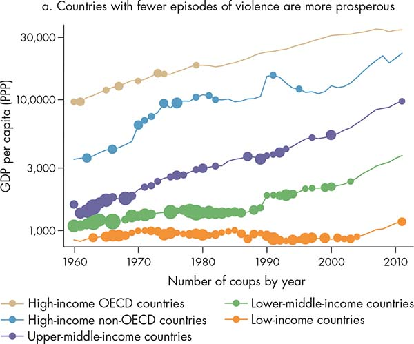

Societies worldwide have made enormous progress in improving the socioeconomic conditions for large groups of people over the last century. Just in the last 20 years, more than 1.2 billion people have been lifted out of poverty (World Bank 2015). Nobel Laureate Angus Deaton labels this achievement “the great escape”: “the story of mankind’s escaping from deprivation and early death, of how people have managed to make their lives better, and led the way for others to follow” (Deaton 2013, ix).
Such a positive performance hides, however, great heterogeneity within and among countries and regions in important aspects of the quality of life. Extreme poverty is still a reality for about 1 billion people, or 14 percent of the total global population. Inequalities are striking—and in many cases increasing. This persistent disparity in social and economic achievement has long concerned policy makers, academics, and development practitioners, particularly in today’s world, where the links among countries are stronger and technology diffusion can be fast and cheap.
Consider, for example, the under-5 child mortality rate. This indicator is regarded as one of the most significant measures of how a society is doing in addressing the needs of its population because it reflects the quality and incidence of service provision (Buckley 2003; Andrews, Hay, and Myers 2010). Despite substantial improvements over the last 45 years, developing countries still lag many years behind the rate in developed countries for this indicator. For example, the child mortality rate in Sierra Leone matches Portugal’s rate 58 years ago (figure 1.1, panel a). Moreover, within countries individuals at the bottom of the income distribution systematically lag behind those at the top. For example, the poorest 20 percent of the population of India is approximately 25 years behind the wealthiest 20 percent (figure 1.1, panel b).
Figure 1.1 Despite declining under-5 child mortality rates, inequality among and within countries is still sizable
Source: WDR 2017 team, using data from UN Inter-agency Group for Child Mortality Estimation (IGME).
Note: Data for all comparator countries are from the most recent year available (circa 2015).
Sources: WDR 2017 team elaboration based on data from Bolivia’s National Statistical Institute (census, 2012) for education and access to water and on data from the Demographic and Health Survey Program (2008) for health.
Explanations of such vast disparities in development performance typically focus on proximate factors—for example, the provision of health services, connectivity infrastructure, or access to finance. “The intensive study of the problem of economic development,” Hirschman (1958, 1) noted almost six decades ago, “has had one discouraging result: it has produced an ever-lengthening list of factors and conditions, of obstacles and prerequisites.” This Report argues that, although proximate factors such as access to finance or the provision of health services are indeed crucial for development, the adoption and implementation of successful pro-development policies often depend on deeper underlying determinants. Ultimately, confronting the challenges faced by today’s developing countries—to name a few, poor service delivery, violence, slowing growth, corruption, and the sustainable management of natural resources—requires a rethinking of the process by which state and nonstate actors interact to design and implement policies—that is, what this Report calls governance (box 1.1).
Box 1.1 What is governance?
Governance is the process through which state and nonstate actors interact to design and implement policies within a given set of formal and informal rules that shape and are shaped by power.a This Report defines power as the ability of groups and individuals to make others act in the interest of those groups and individuals and to bring about specific outcomes (Dahl 1957; Lukes 2005).
Depending on the context, actors may establish a government as a set of formal state institutions (organizations and rules) that enforce and implement policies. Also depending on the context, state actors will play a more or less important role with respect to nonstate actors such as civil society organizations and business lobbies. In addition, governance takes place at different levels, from international bodies, to national state institutions, to local government agencies, to community and business associations. These dimensions often overlap, creating a complex network of actors and interests.
Source: WDR 2017 team.
a. This general definition is
consistent with the World Bank’s corporate definition, which emphasizes formal institutions and the role of state actors.
Although proximate factors such as access to finance or the provision of health services are indeed crucial for development, the adoption and implementation of successful pro-development policies often depend on deeper underlying determinants.
An understanding of governance as an underlying determinant of development is useful in examining cases of the successful and unsuccessful adoption and implementation of policies in pursuit of security, growth, and equity, and helps explain apparent contradictions in the development trajectories of countries around the world. Some recent cases have attracted global attention.
State building in Somalia and Somaliland. Somalia, one of the world’s most fragile countries, has been wracked by violence for more than two decades. Insurgent attacks and regional conflicts have prevented the emergence of a centralized state with a monopoly over the legitimate use of force. Warring factions, many with their own regional sources of power, have been unable to reach a credible deal to determine the makeup and responsibilities of the central state. By contrast, in Somalia’s autonomous region of Somali-land, an area with similar tribal and clan tensions, 20 years of stability and economic development have followed a 1993 clan conference that brought together leaders from both the modern and traditional sectors, successfully institutionalizing these clans and elders into formal governing bodies.
Confronting corruption and the resource curse in Nigeria. In 2010, just a year after experiencing a decade-long bounty of windfall revenues from high oil prices, Nigeria was requesting budget support from its development partners. From a long-term perspective, it is unclear how much of Nigeria’s oil wealth has been saved to invest in the future, although a Sovereign Wealth Fund was established in 2011 to address these concerns. According to a former governor of the central bank, the country has lost billions of dollars to corruption by the National Petroleum Company. Indeed, according to 2015 data from the Afro-barometer survey, 78 percent of Nigerians feel that the government is “doing badly in fighting corruption.” Ultimately, the institutional context was unable to safeguard natural resource revenues in order to reduce fiscal volatility and promote a macroeconomic environment conducive to long-term investment. Several countries have demonstrated that the “natural resource curse”—the paradox that countries with abundant natural resources face slower growth and worse development outcomes than countries without resources—can be avoided through effective economic and fiscal policies.
China’s growth performance and growth challenges. For four decades, China, while increasingly integrating its economy with the global economy, grew at double-digit rates and lifted more than 700 million people out of poverty. This successful track record of economic growth is well known. Yet, according to many frequently used indicators, China’s institutional environment during this period appears not to have changed. Does this imply that institutions do not matter for growth? No. Rather, a deeper understanding of China’s development shows what these indicators miss: the adaptive policy decisions and state capacity that enabled economic success were facilitated by profound changes to mechanisms of accountability and collective leadership. China’s experience highlights the need to pay more attention to how institutions function and less to the specific form they take. Meanwhile, today China faces a slowdown in growth. Maintaining rapid growth and avoiding a “middle-income trap” require the political will to switch to a growth model based on firm entry, competition, and innovation. In many middle- income countries, this transformation has been blocked by the actors that benefited from early growth and have mixed incentives to join coalitions for further reforms. Going forward will involve addressing these governance challenges.
Slums and exclusion in India’s cities. Urban development that stems from coordinated planning and investment by coalitions of developers, bureaucrats, citizens, and politicians can lead to cities that are centers of growth, innovation, and productivity. Planners can help ensure that infrastructure meets the demands of investors who seek to maximize land rents, businesses that need connectivity to their consumers, and citizens who want access to services and jobs. But many cities fail to deliver on these promises. In India, massive urban slums—about 49,000 at the latest count, with tens of millions of inhabitants—represent failures to align public investments and zoning with the needs of a diverse set of urban constituents. Underinvestment in housing and inaccessible or unaffordable transportation options have driven workers into informal settlements, often in peripheral areas. Although many developers and politicians have exploited the system to generate rents for themselves, this uncoordinated urban development has prevented cities from achieving their growth potential, leading to large slums where most citizens are deprived of basic services.
Demanding better services in Brazil. In 2013 the world watched when protests erupted in Brazil’s streets, with citizens complaining about the quality of public services—transport, education, and health—as the 2014 FIFA World Cup soccer tournament approached. Brazil had gone through 12 years of inclusive and sustained growth, which had lifted more than 30 million people out of poverty and strengthened the middle class. But these same middle classes that contributed with their taxes to the provision of public services were now demanding better quality and coverage, including “FIFA standards” for their schools. Why did this change come about? Brazil’s social contract has historically been weak and fragmented. The poor received low-quality public services, while the upper-middle classes relied on private services and thus were less willing to contribute to the fiscal system. The creation of an expanded middle class and the reduction of poverty paradoxically heightened the perceptions of unfairness as the new middle class expected more than low-quality public services for its contributions.
“Brexit” and the growing discontent with economic integration. In June 2016 voters in the United Kingdom elected to leave the European Union (EU). The economic consequences for the country in particular and Europe in general have become a source of uncertainty in policy circles. Dissatisfaction with economic and political integration is not, however, exclusive to this region. In countries throughout the world, populist parties have campaigned against trade and integration—some of them enjoying unprecedented electoral success in both developing and developed economies. These parties often prey on citizens’ increasing feelings of disenfranchisement and exclusion from decision making, as well as on a growing perception of free-riding by specific groups. Even in countries that have undoubtedly benefited from integration, the unequal distribution of such benefits and perceived ineffectiveness of “voice” have led many citizens to question the status quo, which could have consequences for social cohesion and stability.
As these examples illustrate, contradictions occur in the real world. Somalia is a fragile state, while Somaliland seems to be doing well. Nigeria has an abundance of resources, but it is still a lower- middle-income country. China grew rapidly, even though many of its fundamental institutions did not change. India has grown, but it cannot control the propagation of slums. Brazil has experienced inclusive growth, but it is now facing increasing demands from the middle class. Great Britain had low unemployment, but it voted to leave the EU. The common thread running through these contradictions is governance, which helps explain why ineffective policies persist, why effective policies are often not adopted or implemented, and why unorthodox institutional arrangements may nevertheless generate positive outcomes. In other words, governance drives policy effectiveness. This is the main theme of this Report.
Governance drives policy effectiveness.
This Report assumes that all countries share a set of development objectives: minimizing the threat of violence (security), promoting prosperity (growth), and ensuring that prosperity is shared (equity), while also protecting the sustainability of the development process for future generations (box 1.2). But policies do not always translate into these development outcomes in expected ways.
The first condition that societies want to establish in the pursuit of development is security—that is, people are safe from violence and the threat of violence. It is a fundamental dimension of well-being and a first-order characteristic of development (UNDP 1994; Sen 1999).
Box 1.2 Governance for what? Achieving the goals of security, growth, and equity
Many aspects of governance have intrinsic value, in particular the notion of freedom. In economic terms, freedom can be seen as an opportunity set, and development can be seen as “the removal of various types of unfreedoms” (exclusion from opportunities), where these unfreedoms reduce people’s capacity to exercise “their reasoned agency” (Sen 1999, xii). As essential as such an intrinsic value as freedom is, its instrumental value also matters because of the “effectiveness of freedoms of particular kinds to promote freedoms of other kinds” (Sen 1999, xii). These positive relationships are what economists call complementarities. This Report acknowledges the intrinsic value of various dimensions of governance, as well as the notion of development as a positive freedom, while also recognizing their instrumental value to achieving equitable development.
As noted, the analysis in this Report starts from the normative standpoint that every society cares about freeing its members from the constant threat of violence (security), promoting prosperity (growth), and ensuring that such prosperity is shared (equity). It also assumes that societies aspire to achieving these goals in environmentally sustainable ways. This Report, then, assesses governance in terms of its capacity to deliver on these outcomes.
This approach is consistent with the transition from a dialogue based on ideology to the dialogue based on ideals that has transpired in the global development community over the last few decades. The establishment of the Millennium Development Goals (MDGs) in 2000 and the recent ratification of the Sustainable Development Goals (SDGs) by member countries of the United Nations are examples of the efforts to set common goals for social and economic advancement. SDG 16 calls for promoting “peace, justice, and strong institutions,” and it is explicitly related to governance. Nevertheless, as this Report will argue, beyond its intrinsic value, the SDG 16 goal also has important instrumental value because its attainment will aid in the attainment of all the other SDGs. Indeed, achievement of all the development goals will require a solid understanding of governance to enable more effective policies.
Source: WDR 2017 team.
Yet, in 2014 more than 1.4 billion people lived in countries affected by violence (OECD 2015, 31). Violence is a major problem in 37 countries (map 1.1).1 The list includes not just fragile low-income states such as Afghanistan, Somalia, and South Sudan, but also rising economic giants such as Brazil, Mexico, and South Africa. More than 740,000 people die each year as a result of armed violence. Remarkably, the majority of these deaths—about 490,000—occur in countries not affected by ongoing wars (Geneva Declaration Secretariat 2015). Homicides claimed an average of 377,000 lives between 2007 and 2012.2 Civil wars, rebellions, and other forms of political violence caused 101,400 fatalities in 2014 alone (UCDP/PRIO 2015). At the end of 2014, 57.7 million persons worldwide were displaced (UNHCR 2015). As these figures regrettably reflect, policies to achieve security are too often ineffective; indeed, certain policies and their poor implementation can cause or exacerbate the societal problems contributing to violence.
Map 1.1 Violence is a major problem in 37 countries
Violent deaths per 100,000 residents per year, 2008–12
IBRD 42495 | SEPTEMBER 2016
Sources: WDR 2017 team, based on World Bank 2011; Pennsylvania State University, Correlates of War Project (COW), 2015; Geneva Declaration Secretariat 2015.
Note: Violent deaths comprise organized violence and homicide deaths.
More secure societies are also more prosperous (figure 1.2, panel a). Most of the relatively faster growth of higher-income countries between 1950 and 2011 resulted not from experiencing faster growth but rather from shrinking less—and less often—from crises or wars than lower-income countries (figure 1.2, panel b). In the even longer run, annual data on 14 European countries and the United States starting in 1820 show a sharp reduction in the frequency of the shrinking of economic growth after 1950—the period following World War II, which was the last mass-scale episode of organized violence in these countries (Wallis 2016).
Figure 1.2 Economic growth requires security

Sources: WDR 2017 team, based on data from Archigos database (Goemans, Gleditsch, and Chiozza 2009) for number of coups and Penn World Table, version 8.1 (Feenstra, Inklaar, and Timmer 2015), for level of GDP per capita.
Note: The size of the circles on each time series is relative to the number of coups per country for each income group in a given year. GDP = gross domestic product; OECD = Organisation for Economic Co-operation and Development; PPP = purchasing power parity.
Sources: WDR 2017 team, based on Wallis 2016, with data from Penn World Table, version 8.1 (Feenstra, Inklaar, and Timmer 2015).
Note: The figure shows real GDP per capita (constant prices: chain series). Countries were first sorted into income categories based on their income in 2000, measured in 2005 U.S. dollars. Average annual growth rates are the simple arithmetic average for all the years and all the countries in the income category, without weighting. The sample underlying the figure comprises 141 countries, which have data available from at least 1970 onward. GDP = gross domestic product.
More secure societies are also more prosperous.
Security, however, is not sufficient to achieve growth. In their quest for prosperity, countries require sustained improvements in efficiency and investment to spur economic growth. Low-income countries tend to grow as surplus labor is reallocated from agriculture to industry. Once the gains from this early industrialization process are exhausted, however, new sources of growth are needed. Economic growth arises from accumulation—such as the mobilization of savings for industrial investment—and efficiency—how well inputs are being put to use. And yet, many middle-income countries appear incapable of achieving gains in either accumulation or efficiency, becoming stuck instead in low-growth traps. Indeed, in contrast to the predictions of several growth theories, there is no evidence that low- and middle-income countries tend to converge toward high-income ones (Jones 2015).
Several countries have managed, though, to escape this middle-income trap. How? The evidence suggests that the continual reallocation of resources across sectors and firms is a substantial source of efficiency (total factor productivity, or TFP). In a dynamic setting in which new companies enter the market while uncompetitive firms exit, inputs reallocate between firms, giving way to innovation, competition, and productivity. Countries that escape the low-growth trap also tend to have a diversified export base in which coordination between domestic companies and governments contributes to shaping industrial investment. Indeed, the literature and policy forums are filled with discussions about the right sets of policies that can enable efficient resource allocation and investment upgrading. Nevertheless, as the persistent stagnation of many middle-income countries around the world reflects, very often these policies are not adopted or fail to achieve the expected results.
In addition to seeking prosperity, societies care about being equitable. In the United States, the Occupy movement’s slogan, “We are the 99%,” denounced the concentration of wealth among the top 1 percent. As these and other movements around the world reflect, concerns about increasing inequality are growing. The evidence indicates that these concerns are not without foundation. Even though there are signs that global income inequality is falling, inequality within countries is on the rise, and the concentration of income at the top has increased over recent years (World Bank 2015). In addition to normative concerns, a more equitable distribution of income is associated with positive outcomes, including stability and economic growth. So how do countries become more equitable?
Inequality and growth are structurally linked. Making growth more equitable involves policies that look at the bottom half of the income distribution. Consider the differences in the structure of economic activity and public services in low- compared with high-income countries. Traveling across a low- income country, one frequently observes a pattern of homogeneous economic activity—for example, large groups of people relying on agricultural activities—but rather heterogeneous public services—connectivity is uneven, and the availability and quality of services such as education and health vary dramatically from the rural to urban sectors (box 1.3). Quality and access are much lower for low-income people. Indeed, a low commitment to providing quality public services is one of the main characteristics of the most inequitable countries in the world. The opposite tends to be true in advanced countries, where one finds a more diversified economic structure and a rather homogeneous coverage and quality of public goods and services, independent of individuals’ circumstances. The quest for development could thus be summarized as the transition toward more diversified economic opportunities and a more homogeneous response of public services to all individuals.
Box 1.3 Discontinuities of the state
Distribution of income is not the only factor associated with the heterogeneous coverage and quality of the provision of services and public goods. Circumstances such as gender, ethnicity, and location are also associated with the differential capacity of groups to influence the distribution of resources and the design of policies to address their needs. Location, in particular, is an important dimension because of its correlation with other circumstances. As Kanbur and Venables (2005, 3) note, “Spatial inequality is a dimension of overall inequality, but it has added significance when spatial and regional divisions align with political and ethnic tensions to undermine social and political stability.”
In this sense, the state can be said to be discontinuous in terms of its presence and therefore its ability to respond effectively to the needs of citizens in specific territories (O’Donnell 1993, 2003). When some regions or social groups are systematically neglected, geography becomes a prominent dimension that reflects inequities. State discontinuity can be approximated by a measure of the unequal density of the presence of the state in the different geographical regions of a country.
In Bolivia, a subnational analysis of the country’s nine departments (departamentos) reveals that a few regions are systematically affected by a low state presence, as measured in terms of public services provided in that specific area. Map B1.3.1 shows the level of the state presence in health, education, and basic services (panels a, b, and c, respectively), for each region, -and the composite density of the state (panel d) for these indicators—that is, the average presence across dimensions. The departments of Santa Cruz and Potosí are at the opposite ends of the density spectrum: Santa Cruz has the highest state density, Potosí the lowest. However, in Bolivia the overall discontinuity of the state has decreased over time. Using a measure of the inequality of the density across regions, the analysis finds that the presence of the state across regions in Bolivia has become more homogeneous over time.a
Map B1.3.1 State presence in Bolivia in selected intervention domains and composite density, circa 2010
a. Health
IBRD 42499 | SEPTEMBER 2016
b. Education
IBRD 42499 | SEPTEMBER 2016
c. Access to water
IBRD 42501 | SEPTEMBER 2016
d. Composite density
IBRD 42502 | SEPTEMBER 2016
Note: The indicators for assessing the level of state presence are under-5 child mortality (health), share of literate adults (education), and share of households with access to piped water inside their homes (access to water). The degree of shading indicates the degree of coverage of services. The darker purple shading (panels a–c) represents a higher presence for that dimension (a better outcome or a higher coverage). State density (panel d) is the composite indicator of the different layers of state presence or coverage. The darker orange shading represents higher state density.
The level of state density in different regions is positively, although not perfectly, correlated with the level of local resources (for example, with GDP per capita). Such differences in regional development could be a result of the uneven responsiveness of the state, most likely over a long period of time, to different geographical areas and socioeconomic groups. In Bolivia, for example, the least dense region (Potosí) is also the region with the highest incidence of indigenous population, who historically have been underrepresented in state institutions and in policy making until the recent past.b
Source: WDR 2017 team, based on Ceriani and López-Calva (2016).
a. WDR 2017 team estimates, based on data from Bolivia’s National Statistical Institute for education (census, 1992 and 2012) and access to water (census, 2001 and 2012) and on data from the National Survey on Demography and Health (1994) and Demographic and Health Survey (2008) for health.
b. According to Bolivia’s latest census (2012), Castellano was not the main language spoken in Potosí by 54 percent of the population, 6 years and older, as opposed to, for example, 15 percent in Santa Cruz and 8 percent in Tarija.
The provision of public goods and services as a way to level opportunities and to reduce poverty is undisputed. These and other social policies allow individuals to increase their stock of assets and the opportunity to use them, and they protect the most vulnerable. Fiscal policies enable the public spending behind these social transfers through taxation and help reshape the distribution of resources. Yet, policies to achieve equity are often not adopted, or they fail.
Why do best-practice policies to achieve security, growth, and equity so often fail to produce the desired outcomes? Why are so many potentially transformative policies not adopted? And what makes some unlikely policies succeed? As revealed in this Report, the answers to all of these questions have to do with how policies affect the interests of the actors who have the power to block them, whether actors who would benefit from policies are able to influence the decision-making process, and whether rules and norms sustain the existing equilibrium. In the following chapters, we propose a framework for thinking about these questions in pursuit of a larger objective: how policies for security, growth, and equity can be made more effective by taking governance seriously.
The analysis in this Report calls for paying particular attention to understanding the implications for those groups who tend to have less power to influence the decision-making process because of their economic or social circumstances. Groups that are typically marginalized from the policy arena—such as those at the bottom of the income distribution—should have the same access to opportunities as all others. This is an essential pillar of progress in development.
For sustained progress in development, governance needs to be responsive to all groups in society, regardless of their circumstances. Even though power is distributed unequally in every society—an inevitable fact—promoting governance for the bottom half means promoting a process through which development dividends can still be equitably distributed.
For sustained progress in development, governance needs to be responsive to all groups in society, regardless of their circumstances.
1. This is the number of countries in the first quintile of map 1.1, where the incidence of violence is measured by the number of deaths in armed conflict, in addition to the number of homicides.
2. WDR 2017 team, based on the Global Burden of Armed Violence Report 2015: Every Body Counts (Geneva Declaration Secretariat 2015). These figures are for intentional homicides. The number rises to 3,864,000 if unintentional homicides are included. The World Health Organization (WHO) defines homicide as “injuries inflicted by another person with intent to injure or kill, by any means.”
Andrews, Matthew, Roger Hay, and Jerrett Myers. 2010. “Governance Indicators Can Make Sense: Under-Five Mortality Rates Are an Example.” HKS Faculty Research Working Paper Series, RWP10-015, John F. Kennedy School of Government, Harvard University, Cambridge, MA.
Buckley, C. 2003. “Children at Risk: Infant and Child Health in Central Asia.” William Davidson Institute Working Paper No. 523, University of Michigan, Ann Arbor.
Ceriani, L., and L. F. López-Calva. 2016. “State Discontinuity.” Background Note, WDR 2017, World Bank, Washington, DC.
Dahl, R. A. 1957. “The Concept of Power.” Behavioral Science 2: 202–10.
Deaton, A. 2013. The Great Escape: Health, Wealth, and the Origins of Inequality. Princeton, NJ: Princeton University Press.
Feenstra, Robert C., Robert Inklaar, and Marcel P. Timmer. 2015. “The Next Generation of the Penn World Table.” American Economic Review 105 (10): 3150–82. Version 8.1, http://www.rug.nl/ggdc/productivity/pwt/pwt-releases/pwt8.1.
Geneva Declaration Secretariat. 2015. Global Burden of Armed Violence 2015: Every Body Counts. Cambridge, U.K.: Cambridge University Press.
Goemans, Henk E., Kristian Skrede Gleditsch, and Giacomo Chiozza. 2009. “Introducing Archigos: A Dataset of Political Leaders.” Journal of Peace Research 46 (2): 269–83.
Hirschman, Albert O. 1958. The Strategy of Economic Development. New Haven, CT: Yale University Press.
Jones, Charles I. 2015. “The Facts of Economic Growth.” NBER Working Paper 21142. National Bureau of Economic Research, Cambridge, MA. Forthcoming in John B. Taylor and Harald Uhlig, eds. Handbook of Macroeconomics, Vol. 2. Amsterdam: Elsevier.
Kanbur, Ravi, and Anthony J. Venables. 2005. “Spatial Inequality and Development.” In Spatial Inequality and Development, edited by Ravi Kanbur and Anthony J. Venables, 3–11. Oxford, U.K.: Oxford University Press.
Lukes, Steven. 2005. Power: A Radical Review. London: Palgrave Macmillan.
O’Donnell, Guillermo. 1993. “On the State, Democratization and Some Conceptual Problems: A Latin American View with Glances at Some Postcommunist Countries.” World Development 21 (8): 1355–69.
————. 2003. “Democracia, Desarrollo Humano y Derechos Humanos.” In Democracia, Desarrollo Humano y Ciudadanía: Reflexiones sobre la Calidad de la Democracia en América Latina, edited by G. O’Donnell, O. Iazzetta, and J. Vargas Cullel, 25–148. Rosario, Santa Fe, Argentina: Homo Sapiens.
OECD (Organisation for Economic Co-operation and Development). 2015. States of Fragility 2015: Meeting Post-2015 Ambitions. Paris: OECD Publishing.
Pennsylvania State University. Various years. Correlates of War Project (COW). State College, PA, http://www.correlatesofwar.org/.
Sen, Amartya K. 1999. Development as Freedom. Oxford, U.K.: Oxford University Press.
UCDP/PRIO (Uppsala Conflict Data Program/Peace Research Institute Oslo). 2015. Armed Conflict Dataset Version 4-2015 (1946–2014). Uppsala University, Sweden, http://www.pcr.uu.se/research/ucdp/datasets/ucdp_prio_armed_conflict_dataset/.
UNDP (United Nations Development Programme). 1994. Human Development Report 1994: New Dimensions of Human Security. New York: UNDP.
UNHCR (United Nations High Commission on Refugees). 2015. UNHCR Global Trends: Forced Displacement in 2014: World at War. Geneva: UNHCR.
Wallis, John. 2016. “Governance and Violence.” Background paper, WDR 2017, World Bank, Washington, DC.
World Bank. 2011. World Development Report 2011: Conflict, Security, and Development. Washington, DC: World Bank.
————. 2015. Global Monitoring Report 2014/2015: Ending Poverty and Sharing Prosperity. Washington, DC: World Bank.